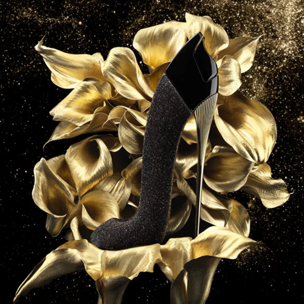
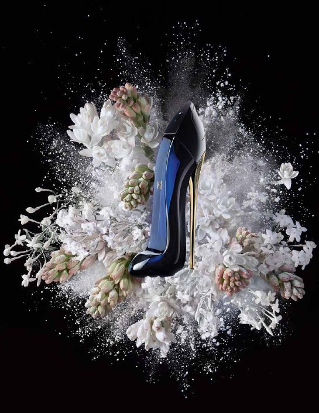

The exhibition of three different perfumes from the Good girl line
What does Good Girl perfume smell like?
Good Girl Carolina Herrera EDP Women's Perfume
The aroma of Good Girl is at the same time an intense, refreshing and captivating perfume. The sweet qualities of jasmine bring a light femininity to the fragrance, while the richly scented cocoa and predominant Tonka express the mysterious side of Good Girl. Notes of almond and coffee evoke the spirit of bold vibrancy.

